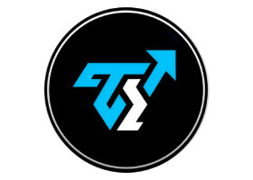
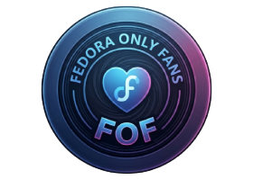

Meus Projetos
VitãoTub
YouTubeCanal principal de tecnologia, segurança digital e games. Conteúdo focado em ajudar usuários a dominarem seus PCs e protegerem seus dados, com tutoriais, reviews e dicas práticas.

Tutorials Insolentes
YouTubeCanal secundário com tutoriais e dicas rápidas sobre tecnologia, segurança digital e otimização de sistemas. Conteúdo direto, prático e acessível para todos os níveis de conhecimento.

Fedora Only Fans (FOF)
GitHubAplicativo para tornar o Fedora Linux tão prático e fácil quanto as distros mais conhecidas para usuários iniciantes. FOF automatiza configurações, instala pacotes essenciais e oferece uma experiência amigável para quem está migrando para o Fedora.
Site VitãoTub
GitHubSite oficial do canal VitãoTub, desenvolvido com HTML, CSS e JavaScript puro. Inclui página principal, bio, feed de vídeos, sistema de artigos e Progressive Web App (PWA) com instalação offline.
WebApp VitãoTub
GitHubWebApp instalável (PWA) do VitãoTub, com feed de vídeos via RSS, sistema de artigos com scroll infinito, modal em tela cheia, tradução automática, tema escuro/claro e suporte offline.